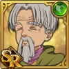
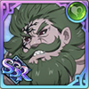
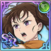
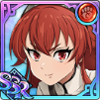
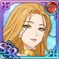
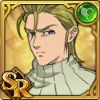
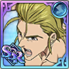
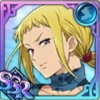
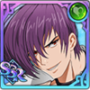
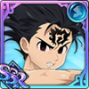

List of Uniques
The page looks better in landscape mode on mobile devices| Name | Unique | Who's Affected? | What's Affected? | Works on Subslot? |
|---|---|---|---|---|
Frejya |
For every applicable ally in PVP, increases the hero's basic stats by 8% and Charm the enemy with the highest CC. The charmed target can only attack this hero and when the hero is attacked by the target, reduces damage taken by 40%. In addition, when the hero deals damage with Exterminate skill, increases damage by 30%. When a critical strike occurs from the hero's skill, removes 1 debuff and increases all stats by 5% up to 15%. | Self & Enemy | Basic stats & Damage | No |
Tyr |
At the start of the battle, aplies Berserk to applicable allies and for 1 turn, taunts all enemies. For every applicable ally in battle, increases that ally's damage by 5% and increases the hero's Crit Damage by 45%. Additionally, at the start of ally's turn, applies 40% Crit Reduction for 1 turn on all enemies. ※ Applicable ally: Ragnarok, Unknown ally | Human Ally & Self | Max HP & Crit Defense | Yes |
 Arden |
Decreases enemies' Ultimate Move Gauge by 2 orbs when the hero participates in battle. (Applies when entering battle) | Enemies | Ult Gauge | Yes |
 Alioni |
Increases HP attribute allies' Attack-related stats by 10%. | HP Allies | Damage | Yes |
Arden |
Decreases enemies' Ultimate Move Gauge by 2 orbs when the hero participates in battle. (Applies when entering battle) | Enemies | Ult Gauge | Yes |
 Arthur |
Increase Human allies' HP-related stats by 15%. | Human Allies | HP-related stats | Yes |
 Arthur |
Increases HP-related stats by 6% at the start of the next turn if the hero takes damage. (Limit 5 time(s)) | Self | HP-related stats | No |
 Arthur |
Increases Crit Damage by 10% per each Ultimate Move Gauge orb. Increases by an additional 50% if it is completely filled. | Self | Crit Damage | No |
 Arthur |
Increases allies' damage dealt to enemies by 35% and decreases damage taken by 35% if all allies are alive. (Applies when entering battle, excludes PVP and Death Match) | Allies | Damage & Damage taken | No |
 Excalibur Arthur |
Increases allies' Max HP by 30% and their damage dealt to enemies by 20% if every ally in battle is Human. (Applies when entering battle) | Human Allies | HP & Damage Dealt | No |
 Excalibur Arthur |
Increases Human race ally's Max HP by 10% for each ally of Human race in battle. When the hero assumes a stance, removes 1 debuff from ally for each ally of Human race in battle. For every Debuff on the allies, increases Crit Defense of allies by 5%. (Up to 5 times) | Human Ally & Self | Max HP & Crit Defense | Yes |
 Athena |
Depletes 2 orb(s) from the Ultimate Move Gauge(s) of all enemies at the end of the turn When an ally hero defeats an enemy during an allied turn in PVP. | Enemies | Ult Gauge | Yes |
 Ban |
Heals 20% of diminished HP at the start of every turn. | Self | HP | No |
 Ban |
Decreases all enemies' Attack-related stats by 15% at the start of the next turn if the hero doesn't take damage. (Limit 5 time(s), resets upon taking damage) | Enemies | Attack-related stats | No |
Ban |
Increases Lifesteal by 30% when using a skill when the hero's HP is below 50%. | Self | HP | No |
 Ban |
Increases all allies' Attack-related stats by 10% and decreases all enemies' Pierce Rate, Crit Chance and Crit Damage by 15%. | Allies & Enemies | Attack-related stats, Penetration, Crit Chance, Crit Damage | Yes |
 Ban |
Decreases all enemies' HP-related stats by 10% at the start of the next turn if the hero doesn't take damage. (Limit 5 time(s), resets upon taking damage) | Enemies | HP-related stats | No |
 Ban |
Fills the Ultimate Move Gauge by 1 orb(s) at the start of the next turn if the hero takes damage. | Self | Ult gauge | No |
 Ban |
Increases Defense by 50% of all enemies' Defense. | Self | Defense | No |
 Purgatory Ban |
Every time the hero's Ultimate Move Gauge fills by 1 orb from using, moving, or ranking up skills, the hero's Max HP increases by 8% (up to 5 times) for 3 turns and removes all Stat Decrease effects from self. | Self | Max HP | No |
Mave: Zena |
At the start of battle, applies Exortion Zone on the hero, then increases HP-related stats of Applicable allies by 5% for every Applicable Ally on the battlefield. In addition, the hero's skills result in Crit Damage when used on enemies with a Mark of Concentration, and the effect is removed once Crit Damage occurs. ※ Applicable Ally: The Seven Deadly Sins, Fairy allies, Human allies | Ally & Self & Enemies | Damage taken & Attack-related Stats, HP-related Stats | No |
 Beatrice |
Increases the hero's HP-related stats by 5% for each ally of Unknown race in battle. Recovers HP of Unknown race allies by 60% of the amount the hero recovers when using skills. (Applies when entering battle) | Self & Allies | HP-related stats & HP | No |
Bellion |
Recovers by 30% of diminished HP for each Debuff removed from the hero. | Self | HP | No |
 Benimaru |
Increases damage dealt by 3% per hero skill use. (Limit 10 time(s)) | Self | Damage | No |
 Brunhild |
Increases the hero's Basic Stats by 12% for every surviving ally. Increases all stats of the hero by 8% when an ally dies. (Applies when entering battle, excluding PVP and Death Match) | Allies | Stats | No |
Brunhild |
For every hero with the Ragnarok characteristic on the battlefield, increases the hero's basic stats by 12%, and at the start of the ally's turn, decreases all enemies' Attack-related stats and Defense-related stats by 15% for 1 turn. | Self & Enemies | Basic stats & Attack-related stats & Defense-related stats | No |
|  Cain |
Increases allies' Attack-related stats by 10% in Death Match. | Allies | Attack-related stats | Yes |
 Camila |
Increases HP-related stats by 5% when the hero takes damage during the enemy's turn. If there are 5 or more of this effect, removes the Buffs and Deletes 1 hero skill and completely fills the Ultimate Move Gauge. | Post-transformation: Increases allies' Attack-related stats by 20%. | Self & Allies | HP-related stats & Ult Gauge & Attack-related stats | No |
Camila |
At the start of Knighthood Boss Battle, increases the hero's Ultimate Move Gauge by 2 and whenever the hero deals damage with a skill, increases the hero's Ultimate Move Gauge by 1. | Post-transformation: Increases the hero's Attack-related stats by 30% in Knighthood Boss Battle, and whenever Unknown ally deal damage with a skill, increases HP of Unknown allies by 12% for 3 turns. | Self & Unknown Allies | Ultimate Move Gauge & Attack-related stats & HP-related stats & Ult Gauge | No |
 Chandler |
Applies an effect which decreases all stats by 7% on enemies who use skills in PVP for 1 turn. (Applies when entering battle, applies before skill activation, can be stacked) | Enemies | All stats | No |
|  Highest-Ranking Demon Chandler |
If all allies participating in battle are applicable allies, increases all allies' Penetration by 40%, and when applicalbe allies attack the enemy, increases damage by 10% up to 30% for every Debuff on the enemy. ※ Applicable Ally: Demons, <Commandment> | Allies | Penetration & Damage | Yes |
 Cusack |
If a critical strike does not occur when a Demon ally uses a single-target skill on the enemy, inflicts additional damage equal to 40% of the enemy's increased Max HP in PVP. (Activates when entering battle) | Enemies | Damage | No |
 Highest-Ranking Demon Cusack |
Decreases Crit Chance by 20% and Crit Damage by 30% for all enemies on the battlefield, then increases Demon allies' Attack-related stats by 4% for each Demon ally in battle. | Enemies & Demon-race allies | Crit Chance & Crit Damage | Yes |
 Deathpierce |
Decreases enemies' Crit Resistance and Crit Defense by 30%. | Enemies | Crit Resistance & Crit Defense | Yes |
 Deldry |
Applies 1 Charm effect on one enemy in PVP. When the charmed enemy uses a skill which inflicts damage to Deldry, it will miss. (Applies when entering battle, excludes Ultimate Moves) | Enemies | Damage | No |
 Denzel |
Increases allies' Recovery Rate by 10% at the start of every turn. (Limit 5 time(s)) | Allies | Recovery Rate | Yes |
 Derieri |
Increases Attack by 10% when the hero uses skills. The effect is removed when a skill is not used. (Limit 10 time(s)) | Self | Attack | No |
 Derieri |
No enemies can fill Ultimate Move Gauge by moving skills. (Applies when entering battle) | Enemies | Ult Gauge | No |
 Derieri |
Increases basic stats by 10% up to 3 time(s) when the hero takes damage from skills. Applies Ultimate Move Disable effect on all enemies for 2 turn(s) at maximum stack. | Self & Enemies | Basic Stats & Ultimate Move | No |
 Diane |
Increases the hero's Attack by 6% at the end of every turn. (Limit 5 time(s)) | Self | Attack | No |
 Diane |
All allies increase Pierce Rate by 8% at the start of the next turn when taking damage. (Limit 5 time(s)) | Allies | Pierce Rate | No |
 Diane |
Increases allies' Defense-related stats by 10% for every Debuff on the hero. | Allies | Defense-related stats | No |
 Diane |
Increases damage dealt by Giant allies by 40%. | Giant Allies | Damage | Yes |
 Small Diane |
Increases Crit Chance by 10% at the start of the next turn if the hero takes damage. (Limit 5 time(s)) | Self | Crit Chance | No |
 Small Diane |
Increases the hero's Crit Chance by the value of the hero's Crit Resistance at the start of the battle. | Self | Crit Chance | No |
 Small Diane |
Taunts enemies and creates a barrier equal to 300% of Defense at the start of the battle. (Applies when entering battle) | Self | HP | No |
|  Blessing of the Earth Diane |
In PVP, removes up to 3 Buffs and Debuffs on the enemy when the hero uses a skill. Increases damage dealt by 40% for each Buff or Debuff removed. (Applies before a skill activation) | Self | Damage | No |
 Blessing of the Earth Diane |
Increases allies' skill ranks at the start of the allies' turn if the allies in Death Match are all from different races, increases their Basic Stats by 30% and applies Debuff Immunity for 2 turn(s). (Limit once, heores with additional races will be counted as dual-race heroes) | Self & Allies | Basic Stats | No |
 Protective Heart Diane |
Increases the damage taken by enemies that used a skill by 20% for 3 turn(s). (Activates when entering battle, excludes Death Match. Applies before skill activation, limit 4 time(s)) | Enemies | Damage taken | No |
 Queen Diane |
When taking damage from the enemy, increases the hero's damage dealt by 10% (up to 50%). Combines up to 500,000 damage taken by skills and skill effects, then increases damage dealt by 20% of the accumulated amount, then decreases allies' damage taken by 40% while the Stance is active. | Self & Allies | Damage dealt & damage receieved | No |
 Dogedo |
Increase the DEF-related stats of Strength Attribute allies by 30%. | Strength allies | Defense-related stats | Yes |
 Dreyfus |
Increases all allies' Pierce Rate to 200% of their values when the hero's Ultimate Move Gauge is completely filled. | Allies | Ult Gauge | No |
 Dreyfus |
Increases Strength attribute allies' Defense by 60%. | Strength allies | Defense | Yes |
 Drole |
Applies an Ultimate Move Disable effect for 2 turn(s) every time an enemy Ultimate Move Gauge reaches 5 orb(s). (Applies when entering battle) | Enemies | Ult | No |
 Drole |
Increases allies' Attack by 3% for every Buff applied to the hero. | Allies | Attack | No |
 Eastin |
Increases the hero's basic stats by 5% for each Buff on allies and enemies. (Limit 5 time(s)) | Self | Basic stats | No |
 Eastin |
Increases allies' Pierce Rate, Crit Chance and Crit Damage by 5% for every Debuff applied on enemies. (Limit 8 time(s), applies when entering battle) | Allies | Penetration & Crit Chance & Crit Damage | No |
 Eastin |
Decreases damage that allies take from single target attacks by 6% for each <The Seven Catastrophes> hero in the team. (Including sub slot hero) | The Seven Catastrophes Allies | Damage taken | Yes |
Eastin of Authority |
Decreases the <The Seven Catastrophes> allies' damage taken by 3% for every 1 orb in Ultimate Move Gauges on the battlefield. | The Seven Catastrophes Allies | Damage taken | Yes |
Eastin of Authority |
Increases Human allies' basic stats by 7% for each enemy defeated in PVP. If a Human ally defeats an enemy during the allies' turn, removes 2 orbs from the ultimate Move Gauges of all enemies at the end of the turn. | Human Allies & Enemies | Basic stats & Ult Gauge | Yes |
Echidna |
Increases Unknown race allies' basic stats by 5% for every Unknown race ally on the battlefield. For 3 turn(s), increases the hero's Attack-related stats by 4% for every enemy that took damage from allies' skills, stacking up to 9 times. | Unknown Allies | Basic stats & Attack-related stats | No |
 Elaine |
Increase Fairy allies' HP-related stats by 15%. | Fairy Allies | HP-related stats | Yes |
 Elaine |
Increases Defense-related stats by 8% at the start of the next turn if the hero takes damage. (Limit 5 time(s)) | Self | Defense-related stats | No |
 Elaine |
Increases allies' stat-related Buffs by half of their values in Death Match. (Excluding Extort) | Allies | Buffs | Yes |
 Golden Wings Elaine |
For each Poisons, Bleed, Shocks or Corrosion effect on the enemies, decreases Penetraion, Crit Chance and Crit Damage by 8%. (Excluding Death Match) | Enemies | Penetration & Crit Chance & Crit Damage | Yes |
 Golden Wings Elaine |
At the beginning of the allies' turn, applies Flower Petals of the Sacred Tree to all enemies for 1 turn. Enemies with this effect take 30% more damage and are affected by Shock for 1 turn when attacked by Fairy heroes. | Enemies | Damage taken | Yes |
 Eleven |
Increases the hero's damage dealt against enemies by 40%. Remaining HP decreases by 10% for each Skill use. | Self | Damage & Remaining HP | No |
 Elizabeth |
Allies heal for 10% of max HP at the start of the next turn when taking damage. | Allies | HP | Yes |
 Elizabeth |
Fills the hero's Ultimate Move Gauge by 2 orb(s) at the start of the battle. | Self | Ult Gauge | No |
 Elizabeth |
Removes all allies' Debuffs, fully heals their HP, and fills Ultimate Move Gauge by 2 orb(s) when the hero dies. | Allies | HP & Ult Gauge | No |
 Elizabeth |
Increases allies' Recovery Rate by 10% every time the hero heals an ally's HP. (Limit 10 time(s)) | Allies | Recovery Rate | No |
 Elizabeth |
When an ally is dies, they are revived with the same amount of HP they had before dying. (Limit once, applies when entering battle. Dying by Reflect effect nullifies revive and uses it up) | Allies | HP | No |
Elizabeth |
Increases allies' basic stats by 5%, up to 2 times, then increases their Attack-related stats by 30% for 2 turns each time the hero uses a skill in PVE. | Allies | Basic stats & Attack-related stats | No |
 Elizabeth of Eternal Rebirth |
Every time one of the applicable allies use a skill, increases their basic stats by 4%, stacking up to 6 times. At max stack, applicable allies recover 30% of Max HP, then increases all of the hero's stats by 15% for 5 turns (Does not apply to Recovery Rate). ※ Applicable heroes: Self, <The Seven Deadly Sins>, <The Four Archangels> | Allies & Self | Basic stats & All stats | No |
 Elizabeth & Hawk |
Increases basic stats by 10% at the start of the next turn if the hero doesn't take damage. (Resets upon taking damage) | Self | Basic stats | No |
 Hawk |
Increases all stats of allies with full Ultimate Move Gauge by 5%. | Allies | All stats | Yes |
 Elizabeth & Hawk |
Increases allies' HP-related stats by 10%. (Excluding PVP and Death Match) | Allies | HP-related stats | Yes |
 Elizabeth & Hawk |
Increases all allies' HP by 12% per Debuff on the hero. | Allies | HP | No |
 Elizabeth & Hawk |
Decreases allies' damage taken from all-target attacks by 10% for every Goddess hero on the battlefield. Decreases allies' damage taken from single-target attacks by 10% for every hero of Unknown race on the battlefield. (Excludes Death Match) | Allies | Damage taken | Yes |
 Ellatte |
Increases allies' Crit Damage by 5% per hero skill use. (Limit 10 time(s)) | Allies | Crit Damage | No |
 Ellatte |
In Knighthood Boss Battle, increases all allies' Defense-related stats by 8% and decreases damage taken by 5% at the start of the allies' turn if allies on the battlefield have representatives from all three of the following attributes: Strength, HP and Speed. (Limit 5 times). | Allies | Defense-related stats & damage received | Yes |
 Emilia |
When the hero is attacked by the same enemy 2 or more times during the enemy's turn, removes Debuffs from allies and Freezes that enemy for 2 turns. | Allies & Enemies | Movement | No |
 Eren |
Increases the hero's damage dealt against an enemy of Unknown race by 30%. | Self | Damage | No |
 Eren |
Increases damage dealt by 10% for every orb filled in the hero's Ultimate Move Gauge. | Titan Form: Immune to Ultimate Move Disable. | Self | Damage & Ult Guage | No |
|  Eris |
For each applicable ally on the battlefield in PVE, increases those allies' Attack-related stats by 10% and damage dealt with single-target attacks by 15%. (※ Applicable Ally: Strength attribute Humans) | Strength Human Allies | Single-target attack damage | No |
 Escanor |
Removes Buffs and Debuffs and becomes immune to Debuffs when the hero's Ultimate Move Gauge is completely filled. | Self | Buffs & Debuffs | No |
 Escanor |
Applies an effect on the hero which increases HP-related stats by 50% at the start of the battle for 3 turn(s). (Applies when entering battle) | Self | HP-related stats | No |
 Escanor |
Applies 1 Buff effect which increases all stats by 6% at the start of the allies' turn. When there are 3 stacks of this effect, the hero remove Debuffs and gain Debuff Immunity for 1 turn. After that, the stacked Buffs are removed one by one until only 1 effect is left, adding Buffs to the stack again. | Self | All stats | No |
 Ultimate Escanor |
Applies Holy Flame on self at the start of the battle. Increases the hero's damage dealt by 15% after using a skill, up to 4 times. All of the hero's stats do not drop below their values at the start of the battle. When taking fatal damage, the hero's Attack-related stats increase by 30%. Holy Flame: Increases all stats by 4% with each passing turn for 5 turns. | Self | Damage, Attack-related stats | No |
 Estarossa |
Increases Attack by 10% for each Debuff on the hero. | Self | Attack | No |
 Estarossa |
Allies have their Debuffs removed when using Stance Skills and gain Debuff Immunity for 2 turn(s). (Excluding Ultimate Moves) | Self | Debuffs | No |
 Berserk Estarossa |
If an ally is a Demon or has a Commandment and inflicts damage on the enemy, applies Darkness on the target. If the target has 4 or Darkness, additionally applies Encroach for 1 turn. Increases allies' basic stats by 5% for every Darkness and Encroach effect on enemies, up to 10 times. | Allies & Enemies | Damage taken & Basic Stats | No |
 Filo |
When an ally damage to an enemy using a Skill, it ignores 8% Crit Resistance and 8% Crit Defense for every Debuff applied to the enemy, and increases the hero's damage dealt by 60% when using single-target Attack Skills (excluding Ultimate Move) against enemies with 5 or more Debuffs. Crit Resistance and Crit Defense reduction effect limited to 5 times) | Self & Allies | Crit Resistance & Crit Defense & Damage | No |
 Fraudrin |
Enemies heroes who have lower CC than Fraudrin will not gain Ultimate Move Gauge for 2 turn(s). (Applies when entering battle) | Enemies | Ult Gauge | No |
 Fraudrin |
When the hero dies, Removes Debuffs from all allies and fills their Ultimate Move Gauge to MAX. | Allies | Ult Gauge | No |
Freesia |
Decreases all enemies' Recovery Rate equal to the ratio of the hero's diminished HP. | Enemies | Recovery Rate | No |
|  Freya |
For every <Ragnarok> ally on the battlefield, increases the hero's Attack-related stats by 7%. For every Debuff on the enemy, increases all allies' Pierce Rate by 4% up to 5 times. | Self & Allies | Attack-related stats & Pierce Rate | No |
 Freyr |
Allies become immune to Ignite. Applies Blessing of Light, which increases all of the hero's stats by 15% for 2 turns at the start of the allies' turn, then applies the same effect again every 2 turns. Increases all stats of allies by 5% for 5 turns whenver Blessing of Light is removed. | Self & Allies | All stats | No |
 Galland |
Coerces one enemy. The affected target cannot activate Debuffs when using skills and may only attack Galland. (Limit 1 time(s) and does not apply to Death Match. Applies when entering battle.) | Enemies | Debuffs | No |
 Galland |
Strength attribute heroes ignores 30% of enemy Defense when use skills. (Excluding Counter Stance skills) | Strength allies | Damage | Yes |
 Gerharde |
Heals allies' HP by 1% of max HP for every 1 orb in allies' Ultimate Move Gauges at the end of the allies' turn. (Applies when entering battle) | Allies | HP | No |
 Ghislaine |
In PvP, increases the hero's basic stats by 7% for every Unknown race ally on the battlefield, then Marks the enemy with the highest Combat Class at the start of the battle. The marked enemy can only attack Ghislaine Dedoldia. In addition, the hero's damage dealt increases by 40% when attacking a Marked enemy and the Marked enemy's Attack-related stats decreases by 30% when they attack the hero. | Self & Enemy | Damage dealt & Attack-related stats | No |
 Gilthunder |
Increases Resistance by 10% per each Ultimate Move Gauge orb. Increases by an additional 50% if it is completely filled. | Self | Resistance | No |
 Gilthunder |
Increases allies' Defense-related stats by 30% in PVP. | Allies | Defense-related stats | Yes |
 Gilthunder |
Increases Speed attribute allies' Defense by 60%. | Speed Allies | Defense | Yes |
 Gilthunder |
Increases the hero's damage by the value equal to 50% of other allies' Crit Resistance at the start of battle. (Applies when entering battle) | Self | Damage | No |
 Gloxinia |
Increases the hero’s Defense-related stats by 5% for every alive ally. Increases Attack-related stats by 5% when an ally dies. (Applies when entering battle) | Self | Defense-related stats & Attack-related stats | No |
 Gloxinia |
Fills the ULtimate Move Gauge by 1 more orb when the hero's skill ranks up. (Excludes rank increase from skill or Unqiue effects) | Self | Ult Gauge | No |
 Golgius |
Increases allies' damage dealt by 15% in Death Match. | Allies | Damage | Yes |
 Gowther |
Increases allies' Attack by 10% at the start of the next turn if the hero doesn't take damage. (Limit 5 time(s), resets upon taking damage) | Allies | Attack | No |
 Gowther |
Allies recover 15% of diminished HP for each Debuff is removed from self. | Allies | HP | Yes |
 Gowther |
Decreases all enemies' Defense-related stats by 15% in PVP. | Enemies | Defense-related stats | Yes |
 Gowther |
Increases allies' Attack-related stats by 7% at the start of the every turn if allies in battle are all from different racess. (Limit 5 time(s), applies when entering battle, resets when two of the same race appear) | Allies | Attack-related stats | No |
 Hijack Gowther |
Increases allies' Attack-related stats by 2% and Max HP by 1% each time and ally uses a skill. (Limit 10 time(s), applies when entering battle) | Allies | Attack-related stats & Max HP | No |
 Griamore |
Increases allies' HP-related stats by 15% in PVP. | Allies | HP-related stats | Yes |
 Griamore |
Increases Attack by a value equal to 30% of the hero's Defense at the start of the battle. | Self | Attack | No |
 Griamore |
Increases allies' Defense-related stats by 20% in Death Match. | Allies | Defense-related stats | Yes |
 Griamore |
For every buff on the hero, increses the hero's Defense by 20%. | Self | Defense-related stats | No |
 Guila |
Increases allies' HP-related stats by 15% in Death Match. | Allies | HP-related stats | Yes |
 Guila |
Fills the Ultimate Move Gauge by 1 orb(s) at the start of the next turn if the hero doesn't take damage. | Self | Ult Gauge | No |
 Guila |
Decreases damage taken by 4% per hero skill use. (Limit 10 time(s)) | Self | Damage | No |
 Gustaf |
Decreases all enemies' Resistance by the value of the hero's Pierce Rate at the start of the battle. (Applies when entering battle) | Enemies | Resistance | No |
 Hawk |
Increases all stats of the hero by 15%. (Excluding PVP) | Self | All stats | No |
 Oslo & Hawk |
Increases the hero's Ultimate Move Gauge by the number of orbs depleted from the enemy's Ultimate Move Gauge by the hero. | Self | Ult Gauge | No |
 Oslo & Hawk |
Increases all enemies' damage taken from Poison, Bleed and Shock Debuffs by 35%. (Excludes Death Match) | Enemies | Damage taken | Yes |
 Helbram |
Heals for 100% of Defense when the hero's HP reaches 0. (Once per battle) | Self | HP | No |
 Helbram |
Increases basic stats by 5% per surviving ally. | Self | Basic stats | No |
Helbram |
Increases HP-related stats by 5% per each surviving ally. | Self | HP-related stats | No |
Helbram |
When the hero has 4 or more Ultimate Move Gauge, allies are immune to Stuns, Petrification and Freezes. | Allies | Debuffs | No |
 Hendrickson |
Increases the hero's Recovery Rate by 10% at the start of every turn. (Limit 5 time(s)) | Self | Recovery Rate | No |
 Hendrickson |
Increases Pierce Rate by 5% per ally skill use. (Limit 10 time(s)) | Allies | Pierce Rate | Yes |
 Hendrickson |
Increases allies' damage dealt with Debuff Attack Skills by 50%. (Excludes Death Match) | Allies | Damage | Yes |
 Howzer |
Increases Human allies' basic stats by 8%. | Human Allies | Basic stats | Yes |
 Howzer |
Decreases all enemies' Crit Chance by the value of the hero's Crit Resistance at the start of the battle. (Applies when entering battle) | Enemies | Crit Chance | No |
|  Howzer |
Increases Crit Chance by 10% per each Ultimate Move Gauge orb. Increases by an additional 50% if it is completely filled. | Self | Crit Chance | No |
|  Howzer |
Increases damage dealt by 30% when an ally uses a Detonate skill. | Allies | Detonate damage | Yes |
 Hugo |
Increases allies' Defense-related stats by 20% when the hero's Ultimate Move Gauge is completely filled. | Allies | Ult Gauge | No |
 Jericho |
Increases Crit Chance by 10% per hero skill use. | Self | Crit Chance | No |
 Jericho |
Increases Speed attribute allies' Attack-related stats by 10%. | Speed Allies | Attack-related stats | Yes |
 Jericho |
Increases Strength attribute allies' Attack-related stats by 10%. | Strength allies | Attack-related stats | Yes |
 Jericho |
If a Critical Strike occurs from an ally's skill use against an enemy, each ally's Crit Chance is increased by 5%. (Limit 10 time(s)) | Allies | Crit Chance | Yes |
 Jericho |
When the enemy takes Critical Strike damage from the hero's skill, an effect is applied on the damaged enemy which decreases Defense-related stats by 40% for 2 turn(s). | Allies | Crit Chance | Yes |
 Jenna |
Only 1 Debuff can be on the hero. Increases Attack by 20% when Debuffed. | Self | Attack | No |
Jillian |
Increases HP attribute allies' HP by 30%. | HP Allies | HP | Yes |
 Jim |
At the beginning of the allies' turn, randomly applies Direct Hit on 2 enemies for 1 turn. Enemies with Direct Hit take 40% more damage and becomes Poisoned for 1 turn when attacked by collab heroes. (Activates when entering battle, excludes Death Match) | Enemies | Damage taken & Poison | No |
 Jormungandr |
At the start of every turn in Demonic Beast Battle Eikthyrnir, applies an effect on all allies which increases all stats by 30% for 2 turns. If 3 allies each use skills once or more, the same effect is applied to all allies again. (Effect is removed from heroes who used skills after effect is applied, effect applies once per condition) | Allies | All stats | Yes |
 Jude |
Allies reflect 10% of damage taken. | Allies | Damage | Yes |
 King |
Increases Fairy allies' basic stats by 8%. | Fairy Allies | Basic stats | Yes |
 King |
Increases Crit Chance by 10% per each Ultimate Move Gauge orb. Increases by an additional 50% if it is completely filled. | Self | Crit Chance | No |
 King |
Reduces all enemies' current Pierce Rate by half in PVP. | Enemies | Pierce Rate | Yes |
 King |
Increases allies' Defense by 100% when the hero's Ultimate Move Gauge is completely filled. | Allies | Defense | No |
 King |
Heals 15% of max HP at the start of the next turn if the hero takes damage. | Self | HP | No |
 King |
Removes Debuffs from the hero at the start of every turn. | Self | Debuffs | No |
 King |
Enemies with 2 or more of the effects Poison, Bleed, Shock, and Corrosion becomes unable to remove Debuffs using Recovery Skills. If there are three of the above Debuffs, additionally decreases 1 orb from the Ultimate Move Gauge at the end of allies' turn. | Enemies | Recovery & Ult Gauge | No |
King |
For every Fairy ally on the battlefield, increases the hero's Attack-related stats by 10% and damage dealt by 10%. For each applicable ally, increases those allies' basic stats by 8%. Increases the hero's damage by 30% when attacking Debuffed enemies. Applicable allies: [The Seven Deadly Sins] with the Strength, HP or Speed Attribute | Self, Sins Allies | Attack-related stats & damag dealt | No |
 Fairy King Harlequin |
When the hero uses a skill, increases damage dealt to enemies by 30%, then create a barrier around all allies equal to 15% of damage dealt for 1 turn. Decreases damage taken by 100% and increases damage dealt by 25%. (Applies when entering battle, excludes Death Match) | Self & Allies | Damage dealt & damage taken | No |
 Kizuna |
In PVE, increases own skill ranks and remove Debuffs from allies if the hero deals damage to the enemy with a skill during the allies' turn. | Allies | Skill rank & Debuffs | No |
 Kyo |
At the beginning of every turn, 2 Ignite effects are applied on all enemies for 3 turn(s), reducing damage dealt to allies by 5% for each Ignite effect on an enemy. (Excluding Death Match, applies when entering battle) | Enemies | Damage | No |
 Levi |
Attacking the enemy with the lowest percentage of HP results in a critical strike. (Activates even when attacking teh last remaining enemy or when theere are two enemies with the same HP percentage) | Self | Crit Chance | No |
 Lillia |
Decreases all enemies' Attack by 16% in PVP. | Enemies | Attack | Yes |
Lillia |
Increases all allies' Pierce Rate by the value equal to 50% of the hero's Pierce Rate. (Applies when entering battle) | Allies | Pierce Rate | No |
 Lillia |
Applies Corrosion on enemies with 3 orbs or less in their Ultimate Move Gauge for 2 turn(s). Decreases Attack of enemies with 5 orbs or more in their Ultimate Move Gauge by 10% for 2 turn(s). (Applies when entering battle, excludes Death Match) | Enemies | HP & Attack | No |
 Lillia of Desire |
For <The Seven Catastrophes> allies, inflicts additional damage equal to 10% of the hero's Max HP when using single-target attacks. Inflicts additional damage equal to 7% of the hero's Max HP when using all-target attacks. | The Seven Catastrophes Allies | Damage dealt | Yes |
Ludociel |
Decreases Defense-related stats of enemy heroes with a Combat Class lower than the hero by 40% for 3 turn(s) in PVP. (Applies when entering battle) | Enemies | Def-related stats | No |
 Ludociel |
Increases goddess allies' Attack-related Stats by 7%, and for for every goddess ally on the battlefield, increases the hero's damage dealt by 15%. | Goddess allies & Self | Attack-related stats & damage dealt | No |
 Covenant of Light Ludociel |
Increases Goddess allies' basic stats by 8% every time an ally uses a Stance or Buff skill. (Limit 5 times, applies when entering battle) | Goddess allies | Basic stats | No |
 Mai |
Increases the hero's basic stats by 15% for 2 turn(s) if their skill ranks up. | Self | Basic stats | No |
 Liz |
If all allies are HP Attribute heroes in Death Match, their Skill Ranks are increased at the start of the turn. (Applies when entering battle, limit once) | Allies | Skill ranks | No |
 Liz |
When an ally uses a skill in Time Limit Dungeon, deals additional damage equal to 40% of the enemy's HP increased by a Unique or Buff. | Enemies | Damage taken | Yes |
 Liz |
Increases basic stats of allies whose Crit Defense is 100% or higher by 20% at the start of the battle. | Allies | Basic stats | No |
 Marmas |
Increases Speed attribute allies' HP by 30%. | Speed Allies | HP | Yes |
|  Matrona |
Increases Giant allies' basic stats by 25%. (Exclude PVP) | Giant Allies | Basic stats | Yes |
 Matrona |
Increases allies' Regeneration Rate by 2% for every 1% of the hero's diminished HP. | Allies | Regeneration | No |
 Mael |
Increases all of the hero's stats by 7% and damage dealt by 10% for each Goddess ally on the battlefield. If all allies on the battlefield are Goddesses, applies Brilliance of the Sun on allies at the start of the battle. | Self & Goddess allies | Stats & Damage dealt | No |
 Megellda |
In Hraesvelgr's Demonic Beast Battle, every time an ally's remaining HP is full, applies 1 effect on that hero which increases all stats by 8% for 5 turn(s), stacking up to 5 times. | Allies | All stats | No |
Megellda |
Increases allies' HP-related stats by 6% up to of 30%, and fills 1 Ultimate Move Gauges every time the hero uses a skill in Demonic Beast Battle. Allies who have had Debuffs removed from the hero's skill use recover 20%their Max HP. | Allies | HP-related stats | No |
 Melascula |
Increases the hero's basic stats by 1% for each orb filled in the Ultimate Move Gauges of both allies and enemies. | Self | Basic stats | No |
 Melascula |
Revives an ally that dies. The revived ally's HP is fixed at 1 for 3 turn(s). (Limit once, effect is removed when the hero dies. Applies when entering battle) | Allies | HP | No |
Melascula |
Increases allies' Basic Stats by 20% of the hero's Lifesteal at the start of battle. Allies become immune to Ignite. (Up to 20%) | Allies | Basic Stats | No |
 Meliodas |
Increases Crit Chance by the ratio of the hero's diminished HP when using a Skill. | Self | Crit Chance | No |
Meliodas |
Increases Crit Chance by 30% at the start of the next turn if the hero doesn't take damage. (Resets upon taking damage) | Self | Crit Chance | No |
 Meliodas |
Increases the hero's Crit Chance by 10% at the end of every turn. (Limit 10 time(s)) | Self | Crit Chance | No |
 Meliodas |
At the start of the allies' turn, increases the basic stats of allies with less than 2 skills by 20%. | Self & Allies | Basic stats | Yes |
 Meliodas |
Increase Crit Chance by 50% when an ally dies. | Self | Crit Chance | No |
 Meliodas |
Unaffected by Attack Disable effects when the hero's Ultimate Move Gauge has 4 orbs or less. | Self | Attack skills | No |
 Meliodas |
The hero's Ultimate Move Gauge fills by the amount of orbs possessed by an enemy killed by the hero during their turn. | Self | Ult Gauge | No |
 Meliodas |
Increases the ranks of all of the hero's skills when the hero takes Crit Damage during the enemy turn. | Self | Skill ranks | No |
 Lostvayne Meliodas |
At the start of battle during the allies' turn, increases the hero's Ultimate Move Gauge by the amount of orb(s) possessed by the hero with the most number of orbs. (Limit 1 time, up to 3 orbs) | Self | Ult Gauge | No |
 Meliodas |
If all allies are Demons or those with Commandments, increases own stats by 5% and decreases Defense-related stats of all enemies by 15% for 3 turns when allies take damage. (Limit 5 time(s), applies when entering battle) | Self & Enemies | Stats and Def-related stats | No |
 Traitor Meliodas |
Every time allies use single-target attack skills, all of the hero's stats are increased by 6% for 3 turns, stacking up to 5 times. If 2 or more single-target attack skills are used in a single turn, allies' damage taken from enemies decreases by 8%, stacking up to 40%. | Self & Allies | All stats & Damage taken | No |
 Traitor Meliodas |
Applies 3 Bonds of Purgatory effect(s) on self at the start of the battle. If an ally takes damage from an enemy's skill use during their turn, or if the hero uses a skill, 1 Shackles of Purgatory effect will be removed. Once the effects are completely removed, the hero applies True Magic on self. True Magic is removed when the hero uses a skill. When is removed, the hero once again applies 3 Shackles of Purgatory effect(s) on self, then increases their damage dealt by 40% when attacking enemies that are either in a Stance or affected by a Debuff, and finally, applies an effect at the end of the enemy's turn which removes 1 orb from Ultimate Move Gauge every turn for 2 turns on enemies who have not used a skill during their turn. | Self & Enemies | Damage taken & Ultimate Move Gauge & Damage Dealt | No |
 Merlin |
Fills allies' Ultimate Move Gauge by 1 orb(s) at the start of the battle. | Allies | Ult Gauge | Yes |
 Merlin |
Increases Pierce Rate by 10% per each Ultimate Move Gauge orb. Increases by an additional 50% if it is completely filled. | Self | Pierce Rate | No |
 Merlin |
Increases the hero's Attack by 2% per Debuff on enemies. | Self | Attack | No |
 Merlin |
The hero's damage taken from skills during the enemy's turn does not exceed 40% of Max HP. Increases Attack-related stats by 1% for every 4% of remaining HP when using skills. | Self | Damage taken & Attack-related stats | No |
 Truth Seeker Merlin |
If the hero uses 2 skills during the allies' turn, applies an effect on all enemies which disable Attack skills for 1 turn. If using 3 skills, applies an effect which prevents Ultimate Move Gauge from filling for 2 turns. | Enemies | Attack skill & Ultimate Gauge | No |
 Truth Seeker Merlin |
Increases all enemies' damage taken from Shock Debuff by 25%. Increases damage taken by 20% while affected by Shock Debuff. | Self | Damage taken from Shock, damage taken | Yes |
 Mage of Infinity Merlin |
At the start of ally's turn, randomly applies 1 Element on enemies without Element effect. For every Element effect, increases all stats of the hero by 7%. Before allies activate skills against enemies with Element, for 3 turns, apply the Element effect on the enemy. When there are 4 Element effects on the enemy, remove them after skill activation and apply the Element debuff for 1 trun. | Self & Enemies | Damage & Debuffs | No |
 Mikasa |
Increases all stats of the hero by 3% for each ally that takes damage. (Limit 10 time(s)) | Self | Stats | No |
Mike |
If the hero inflicts damage on an enemy using a single-target attack, applies an effect which decreases Attack-related stats by 30% for 2 turns. | Enemies | Attack-related stats | No |
 Milim |
Increases Crit Damage by 8% per hero skill use. (Limit 10 time(s)) | Self | Crit Damage | No |
 Mono |
Increases the hero's damage dealt by 50% when attacking enemies with Bleeding, Poisoned or Shocked Debuff(s). | Self | Damage | No |
 Mono |
Increases the hero's damage dealt by 30% per Ultimate Move Gauge orb the enemies have when attacking. (Excluding PVP) | Enemies | Damage | No |
 Mono |
When all allies on the battlefield are <The Seven Catastrophes>, increases all of stats of the hero by 3% each time an ally is damaged from skill use. (Limit 10 times, applies when entering battle, excludes Death Match, resets when another hero exists) | Enemies | Damage | No |
Iron Blood Mono |
At the start of the allies' turn, decreases the Crit Resistance and Crit Defense of enemies who do not have a Debuff by 30% for 1 turn, then increases the hero's Attack by 7% every time this effect applies up to 10 times. | Self & Enemies | Crit Resistance, Crit Defense & Attack | No |
Iron Blood Mono |
For every <The Seven Catastrophes> ally on the battlefield in PVP, increases Basic Stats of <The Seven Catastrophes> allies by 6%. At the start of the battle, increases the hero's damage dealt by the hero's Crit Chance. | Self & The Seven Catastrophes Allies | Basic Stats & Damage Dealt | No |
 Monspeet |
Decreases the hero's damage taken from Ultimate Moves by 30%. | Self | Damage | No |
 Monspeet |
Increases the hero's damage dealt by 100% when attacking Ignited enemies. | Self | Damage | No |
 Nanashi |
At the start of allies' turn, applies a buff to allies with 2 or less skill cards, increasing Max HP, Crit Resistance and Crit Defense by 20% for 1 turn that additionally reduces the attacking enemy's Ultimate Move Gauge by 1 orb per turn. | Allies | MAX HP, Crit Res, Crit Def | Yes |
Naofumi |
If the hero is assuming a Stance, increases allies' basic stats by 30% of the hero's Defense at the start of the battle. Applies 1 Mark of Wrath on self (up to 6) every time damage is taken from skills during the enemy's turn. Increases the hero's damage dealt with all-target Attack Skills by 35% for every mark of Wrath. | Self & Allies & Enemies | Basic stats & Damage | No |
 Ram |
Increases Unknown race allies' basic stats by 20%. | Unknown Allies | Basic stats | Yes |
Raphtalia |
Increases allies' Max HP by 300% of the hero's Defense at the start of the battle. Decreases allies' damage taken by 30% if all allies in battle are of the same attribute. | Allies | Max HP & Damage taken | No |
Reinhard |
Randomly applies 1 of the following effects to the hero for 1 turn at the start of the allies' turn: 50% Damage Dealt increase, 25% All Stats Increase, 1 Evade, Debuff Immunity or Immortality effect. | Self | Damage & Stat & Buff | No |
 Rem |
For each orb filled in the Ultimate Move Gauge when the hero increases rank of, uses, or moves a skill, increases Attack-related stats by 5% for 3 turn(s), up to 5 times. If there are 5 or more Ultimate Move Gauge orbs, recovers 30% of Max HP. | Self | Attack-related stats | No |
 Rimuru |
Allies heal for 5% of diminished HP at the start of every turn. | Allies | HP | Yes |
 Rimuru |
Increases Defense-related stats by 8% at the start of the next turn if the hero takes damage. (Limit 5 time(s)) | Self | Defense-related stats | No |
Demon Lord Rimuru |
At the start of the allies' turn, increases the hero's basic stats by 8%, removes 1 Buff(s) from all enemies, then increases the hero's own basic stats by 8% for each removed Buff. If increased to max, increases the hero's Pierce Rate once by 130% for 3 turn(s). (Basic Stats increase effect stacks up to 5 times) | Self & Enemies | Basic stats & Pierce Rate | No |
 Roxy |
Inflicting Explosion damage on an enemy heals the hero's HP by 30% of max HP and fills the Ultimate Move Gauge by 1 orb(s). | Self | HP & Ult Gauge | No |
 Roxy |
Increases the hero's Attack-related stats by 15% for each ally of the same race participating in battle. | Self | Attack-related stats | No |
 Roxy |
Every time the hero's Ultimate Move gauge is completely filled, allies gain an 1 time Evasion to enemy's Attcks and Debuffs for 1 turn(s). (Excludes Death Match) | Allies | Damage taken | No |
 Roxy of Frenzy |
Increases the hero's Crit Chance by 40% for every Human ally in battle. If a Critical Strike occurs from a Human ally's single-target skill, inflicts additional damage equal to 300% of the hero's Attack at the start of the battle. (Applies only 1 additional damage per skill) | Self & Human Allies | Crit Chance & Damage | No |
Roxy Migurdia |
Applies a barrier equal to 200% of the hero's initial Attack on Unknown race allies at the start of the battle, then applies the same barrier on Unknown race allies again at the start of the allies' turn. Any allies who still have that same barrier at the start of the turn have their Attack-related stats increased by 20% for 1 turn. | Unknown allies | Attack-related stats | No |
Rudeus |
Increases the hero;s basic stats by 10% for every Human ally on the battlefield Whenever a Human ally uses a skill, 1 Magic Orb is applied to the hero before the skill is activated. When the hero uses a single-target attack skill, all Magic Orbs applied to the hero are removed. If the hero has 5 Magic Orbs, using a single-target attack additionally increases Crit Chance by 50% and damage dealt by 30%. | Self | Crit Chance & Damage | No |
 Rugal |
Removes the hero's Debuffs, fully heals their HP, and increases all stats by 15% when the hero survives with 50% HP or less. (Limit once) | Self | HP | No |
 Ruin |
Decreases allies' damage taken by 20% in Death Match. | Allies | Damage taken | Yes |
 Skadi |
Decreases all enemies's Attack and Defense by 8% and increases allies' skill damage dealt by 15% for each Debuff on the hero. | Enemies & Allies | Attack & Defense & Damage dealt | No |
 Sariel |
Increases Goddess allies' basic stats by the value equal to 20% of the hero's basic stats. (Applies when entering battle) | Goddess Allies | Basic stats | No |
 Covenant of Light Sariel |
Increases the <The Four Archangels> allies' Crit Damage by 8% for every Buff effect on the battlefield (Limit 5 times). | The Four Archangels Allies | Crit Damage | Yes |
 Shin |
The hero gains a Buff which increases Attack-related stats by 8% whenever hitting an enemy. When there are 3 or more stacks of this effect, they are removed and increase ally skill ranks. | Allies | Skill ranks | No |
 Shin |
Attacking ean nemy with a Debuff results in a Critical Strike. | Self | Crit Chance | No |
 Shuna |
Decreases Unknown Race allies' damage taken by 20%. | Unknown Allies | Damage received | Yes |
 Sigurd |
At the start of allies' turn, for every enemy affected by Stat decrease effect, applies an efect which increases Attack stats of all allies by 10% for 2 turns (up to 3 times). In addition, the hero is also of Demon race, affected by Uniques and Commandments. (Applies when entering battle, excludes Death Match) | Self & Allies | Race & Attack | No |
 Simon |
Increases allies' damage dealt by 15% in PVP. | Allies | Damage | Yes |
 Slater |
Increases Crit Chance to 300% of its value when the hero uses a skill on an enemy with an empty Ultimate Move Gauge. | Self | Crit Chance | No |
 Slater |
Decreases all enemies' Crit Resistance by the value of the hero's Crit Chance at the start of the battle. (Applies when entering battle) | Enemies | Crit Resistance | No |
 Slater |
When the hero gets attacked in PVP, decreases all damage received from Critical hits by 80%. Then increases allies' Attack by 10% for 2 turn(s). | Self & Allies | Damage received & Attack | No |
 Taizoo |
Decreases allies' damage taken in PVP by 20%. | Allies | Damage taken | Yes |
 Tarmiel |
Decreases all enemies' Max HP by the value of 200% of the hero's Defense. (Applies when entering battle, excludes Death Match) | Enemies | max HP | No |
 Covenant of Light Tarmiel |
All allies' basic stats will increase by 6% every time a hero uses a Grace to restore HP. (Limit up to 5 times) | All allies | Basic stats | No |
 Terry |
At the start of allies' turn in PVP, applies an effect on the enemy with the highest remaining HP which decreases all stats by 20% for 1 turn(s). (Applies when entering battle) | Enemies | All stats | No |
 Thonar |
When a Debuff is removed by skill usage in Death Match, increases all allies' Attack by 40% and Attack-related stats by 20% for 3 turn(s). (Excluding Debuff removal due to Unique effect) | Allies | Attack & Attack-related stats | No |
 Thonar |
In Skoll & Hati Demonic Beast Battle, increases the hero's damage dealt using their Ultimate Move by 200% and increases allies' damage dealt using single-target attacks by 30%. Increases allies' Attack-related stats by 40% for 3 turns every 3 times they inflict damage on enemies. | Allies | Ultimate Move damage & damage dealt | No |
 Twigo |
Increases Strength attribute allies' HP by 30%. | Strength allies | HP | Yes |
Tristan |
Increases Demon allies' Attack-related stats by 3% for each ally of Demon race in battle. Increases Goddess allies' Defense-related stats by 15% for each ally of Goddess race in battle. | Demon Ally & Goddess Ally | Attack-related Stats, Defense-related Stats | Yes |
 Valenti |
Decreases all enemies' Pierce Rate by the value of the hero's Resistance at the start of the battle. (Applies when entering battle) | Enemies | Pierce Rate | No |
 Valenti |
Infects enemies wwho have used Buff Skills, restricting Recovery-related stats for 2 turn(s). (Excludes Ultimate Moves, applies when entering battle) | Enemies | Recovery | No |
 Valenti |
Increases the hero's Pierce Rate and Crit Damage by the value equal to 50% of the hero's Crit Resistance. (Applies when entering battle) | Self | Pierce Rate, Crit Damage | No |
 Valenti |
Decreases Crit Damage of enemies on the battlefield by 75% of the hero's Crit Defense. | Enemies | Crit Damage | No |
 Vivian |
Increase Attack by 8% for every orb filled in the hero's Ultimate Move Gauge. | Self | Attack | No |
 Waillo |
Increases the hero's Attack by 30% for each female ally participating in battle. | Self | Attack | No |
 Weinheidt |
Increases allies' Pierce Rate by 8% at the end of every turn. (Limit 5 time(s)) | Allies | Pierce Rate | Yes |
 Will |
If an ally's HP falls below 50% due to enemy skill use, they will have all of their stats decreased by 20%, Ultimate Move Gauge sealed, and applies 1 Superpower, which grants immunity to all damage for 1 turn. (Applies when entering battle) | Allies | Stats & HP | No |
|  Iori Yagami |
When the hero uses a skill, damage dealt increases by 7% for every Ignite effect on the enemy. After each skill use, applies an effect on the hero (up to 5 times) which increases Attack-related stats by 6% for 3 turn(s). | Self | Damage dealt & Attack-related stats | No |
 Zaneri |
Fills the hero's Ultimate Move Gauge by 1 orb(s) when removing an ally's Debuff. | Self | Ult Gauge | No |
 Zaratras |
When hero uses skill and critical hit did not occur on the enemy, increases the skill's damage by the amount of crit rate hero has. (Excludes PVP) | Self | Damage | No |
 Zeldris |
Increases the hero's Crit Damage by 30% for each orb removed from the Ultimate Move Gauge. (Limit 3 time(s), excludes depletion from Ultimate Move use) | Self | Crit Damage | No |
 Zeldris |
Increases allies' basic stats by 6% for each ally or enemy with a Commandment. | Allies | Basic stats | Yes |
 Zeldris |
Increases the allies' basic stats by 3% for every Debuff applies on all enemies. (Limit 8 time(s)) | Allies | Basic stats | Yes |
|  Prince of Darkness Zeldris |
In PVP, for every applicable ally on the battlefield, increases those allies' Attack-related stats by 4% and decreases all enemies' Attack by 6%. ※ Applicable Ally: Demons, <Commandment> | Allies & Enemies | Attack-related stats & Attack | Yes |
Zena |
When the hero uses a buff skill, increases all allies' ultimate move gauge by 1. (excluding ultimate moves) | Allies | Ultimate Move Gauge | No |